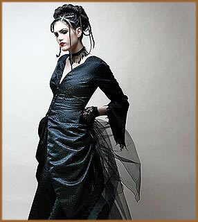

Visual sombrio, com muito preto,
maquiagem carregada e pele pálida. Essa série de
características são facilmente relacionadas com
o estilo gótico, que há tempos influencia a moda
com sua estética soturna e misteriosa. Para fazer uma retrospectiva
e prestar uma homenagem, o importante museu do Fashion Institute
of Technology (FIT), de Nova York, inaugurou nessa semana (setembro
de 2008) a exposição Gothic: Dark Glamour.
Ao que tudo indica, o visual fará sucesso nos próximos
meses.
A
palavra gótico faz referência aos godos,
uma tribo do leste da Alemanha que teve importante papel na queda
do Império Romano do Ocidente. Durante o Renascimento,
essa expressão ganhou um tom pejorativo, significando algo
bárbaro e ultrapassado. Foi aí que a arquitetura
da Idade Média começou a ser chamada de gótica,
sendo considerada pouco refinada para os padrões do Renascimento.
Já nos séculos XVIII e XIX, o termo foi usado para
designar escritores como Edgar
Allan Poe e Bram
Stoker, que tratavam de temas macabros, como morte, monstros
e vampiros.
O espírito gótico
foi resgatado pelos jovens ingleses no final da década
de setenta. Usando roupas pretas repletas de crucifixos e caveiras,
com penteados desarrumados e maquiagem muito carregada, os seguidores
desse movimento buscaram inspiração na morbidez
e no romantismo, cultuando a tristeza e a melancolia. Bandas como
The
Cure, Siouxsie and the Banshees, Bauhaus
e The Cult ajudaram a levar o estilo para o grande público,
tornando-o muito popular durante os anos 80.
Desde então, a moda e os
mais importantes estilistas vêm buscando no visual gótico
inspiração para muitas de suas criações.
Karl Lagerfeld, John Galliano, Jean Paul Gaultier, Christian Lacroix,
Thierry Mugler e Yohji Yamamoto são só alguns dos
grandes criadores que irão participar da exposição
do FIT com roupas que buscaram referência no estilo gótico.
E para provar que o look gótico vai estar com
tudo na próxima estação, elementos obscuros
e macabros apareceram nos últimos desfiles de inverno de
renomadas grifes internacionais como Givenchy, Zac Posen, Rodarte
e Vera Wang.
Adaptar o visual gótico
para roupas do dia-a-dia não é complicado. Uma boa
idéia é apostar no look preto total, combinado
com acessórios prateados ou vermelhos. Rendas, corpetes
e sobretudos também ajudam na hora de montar a produção.
A maquiagem pode ser um pouco mais carregada, com pó ou
base clara, lápis ou delineador preto e batom vermelho.
Mas cuidado para não ficar com a expressão muito
carregada. Uma boa dica é buscar inspiração
nos filmes do cineasta americano Tim Burton, um dos mestres
em reproduzir a estética gótica no cinema, como
fez nos filmes Sweeney Todd e Edward Mãos-de-Tesoura.
Mas cuidado para não se empolgar muito e sair de casa parecendo
a protagonista de Noiva Cadáver.
Texto original
de Elis Martini
Extraído
de http://planetaterra.terra.com.br